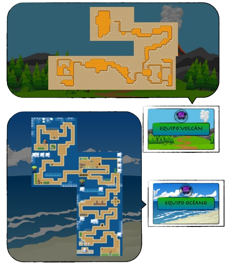
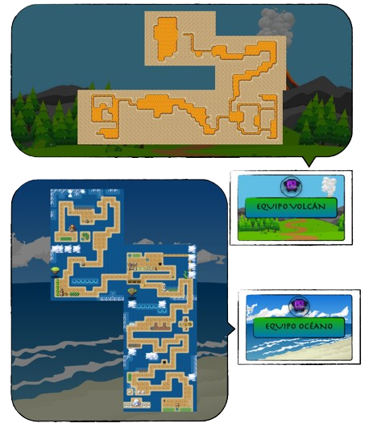

En clase trabajamos por equipos. Cada uno de los equipos tiene asociado un mapa de un ecosistema diferente, el cual será su referente en el avance del curso.
Los mapas están compuestos por 5 casillas, e irán avanzando semanalmente por cada una de ellas. Por lo que todos podrán pasar por los diferentes ecosistemas a lo largo del curso.
Encontramos cinco mapas: Gélido, Volcán, Desierto, Océano y Bosque.
Los mapas, nos indican las tareas que puedo desarrollar esa semana.
En las casillas que solo hay decoración, podremos capturar a nuestros Grumpi, quedando limitado a la consecución de 3 Grumpi entre las dos semanas que duran. (Las dos primeras casillas)
En las casillas que aparece la tienda Grumpi, podremos canjear nuestros Grumpidólares o energía por las recompensas que queramos en la tienda. Además, puedo evolucionar a dos Grumpi. (Tercera casilla)
En las casillas que aparece el Gimnasio Grumpi, puedo conseguir la medalla que me toque. Queda limitado a la consecución de una medalla, salvo excepciones indicadas por el profesor. (Cuarta casilla)
En las casillas que aparece el Hospital Grumpi, puedo realizar combates con el juego elaborado para ello (solo hay uno para el aula), y puedo evolucionar a un Grumpi.(Quinta casilla)
Una vez superado el mapa, se pasarán los avatares a otro mapa y se volverá a empezar en un ecosistema diferente.
 Si no he entregado el trabajo en el tiempo establecido para ello, tendré que
esperarme hasta estar en la casilla correspondiente de nuevo.
Si no he entregado el trabajo en el tiempo establecido para ello, tendré que
esperarme hasta estar en la casilla correspondiente de nuevo.
 
